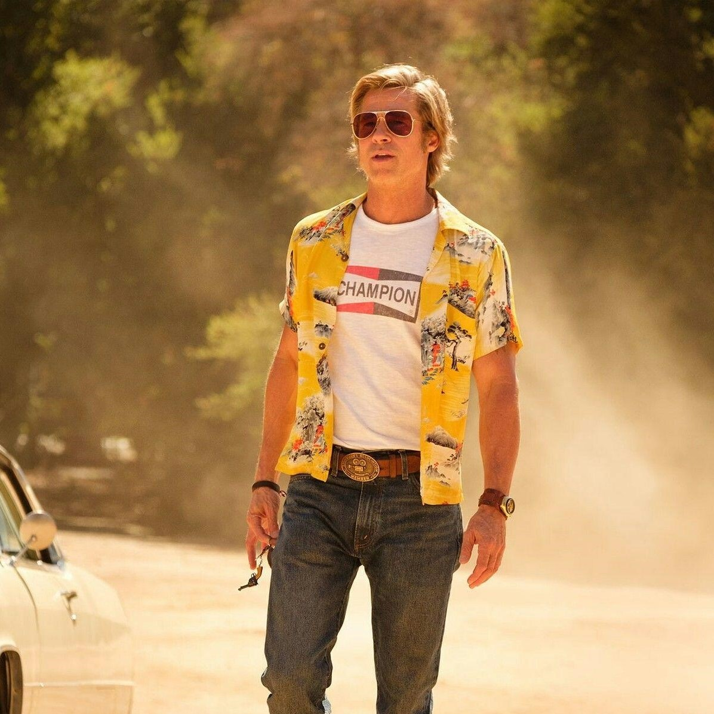
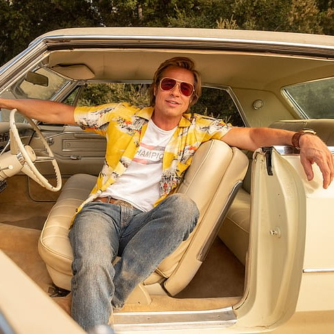
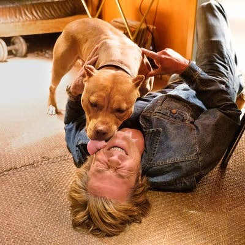

Cliff ugyan csak mellékszereplő, de gyakran láthatjuk, mivel Rick legjobb barátja és ezermestere is. Akár sófőrködésre is hajlamos, mivel Rick jogsiját bevonták ittas vezetés miatt. Rick kaszkadőre volt, amig ki nem rúgták a híre miatt. Az ő esetében az a cél, hogy vissza szereze elsődleges állását, és boldogan élhessen kutyájával, Brandyvel. Érdekesség, hogy ő már összefutott a hippiknek ábrázolt Manson hívekkel, akik később életükre törtek
Cliffről mindenkinek van egy perspektívája, ugyanis azok a hírek tengenek szerte a városban, hogy saját kezűleg megölte a feleségét és megúszta bármiféle büntetés nékül